ПОГРУЖЕНИЕ В МИР FPV ДРОНОВ
Инженерный путеводитель по беспилотным летательным аппаратам, искусству пилотирования от первого лица и детальный разбор кастомного Cinewhoop-дрона BetaFPV Pavo25.
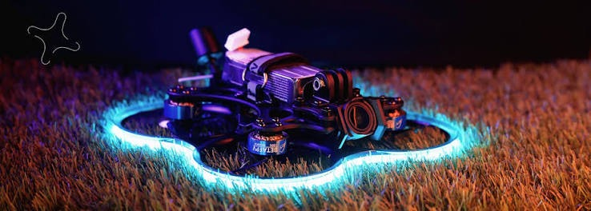
Что такое дрон?
Управление дроном осуществляется либо дистанционно человеком-пилотом через радиоканал управления, либо полностью автономно с помощью бортового полётного микрокомпьютера, датчиков позиционирования (акселерометры, гироскопы, барометры) и спутниковых систем GPS/ГЛОНАСС.
В основе полёта многороторного дрона лежит точное распределение тяги между электромоторами. Бортовой контроллер производит тысячи расчётов в секунду (PID-алгоритмы), мгновенно компенсируя ветер, турбулентность и удерживая аппарат в стабильном равновесии.
Мирные и гражданские сферы применения
Современные БПЛА совершили технологическую революцию в десятках отраслей человеческой деятельности:
Аэросъёмка и киноиндустрия
Создание динамичных кинематографических кадров, прямые трансляции спортивных событий, съёмка пейзажей и архитектуры с недоступных ранее ракурсов.
Поисково-спасательные операции
Поиск пропавших людей в горах, лесах и зонах стихийных бедствий с помощью тепловизоров, ночных камер и ретрансляторов связи.
Сельское хозяйство
Мультиспектральный мониторинг здоровья растений, обнаружение очагов засухи, точечное внесение удобрений и биозащиты без повреждения посевов.
Геодезия и картография
Лазерное сканирование (LiDAR), фотограмметрия, быстрое построение цифровых 3D-моделей рельефа и кадастровая съёмка высокой точности.
Инспекция инфраструктуры
Безопасное обследование высоковольтных ЛЭП, ветрогенераторов, мостов, плотин, солнечных электростанций и высотных фасадов зданий.
Экология и доставка
Учёт диких животных в заповедниках, контроль очагов лесных пожаров, экспресс-доставка медикаментов и проб в труднодоступные районы.
Какие бывают дроны?
Современный мир БПЛА делится на классы в зависимости от аэродинамической схемы, назначения и характеристик.
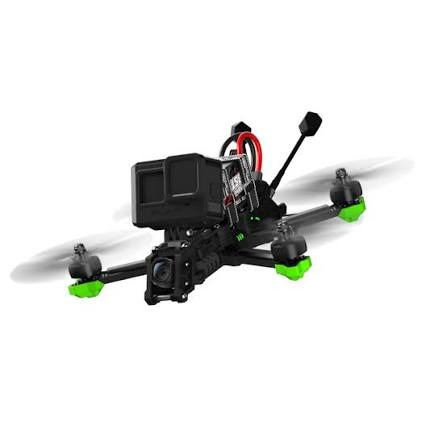
4 мотора (Quadcopter)FPV-дроны (Freestyle & Cinematic)
Скоростные маневренные дроны, управляемые пилотом в реальном времени через специальные видеоочки с видом «из кабины».
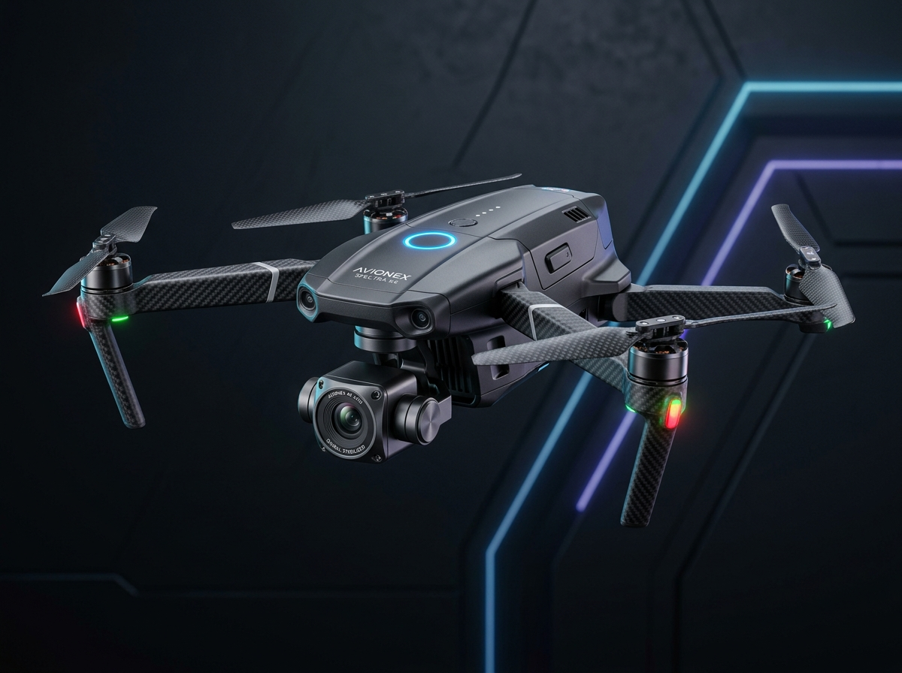
4 мотора (Quadcopter)Камерные / потребительские дроны
Автоматизированные летающие платформы со стабилизированной 3-осевой подвесной камерой высокого разрешения (4K/8K).
Гоночные дроны (Drone Racing)
Специализированные сверхлёгкие FPV-болиды, спроектированные исключительно для максимального ускорения и победы на трассе.
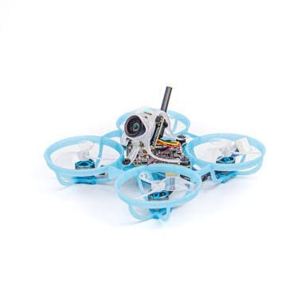
4 мотора (pusher-компоновка)Cinewhoop-дроны (Безопасные синематик-дроны)
Компактные FPV-коптеры с кольцевой защитой пропеллеров (дакты), оптимизированные для плавной кинематографической видеосъёмки.
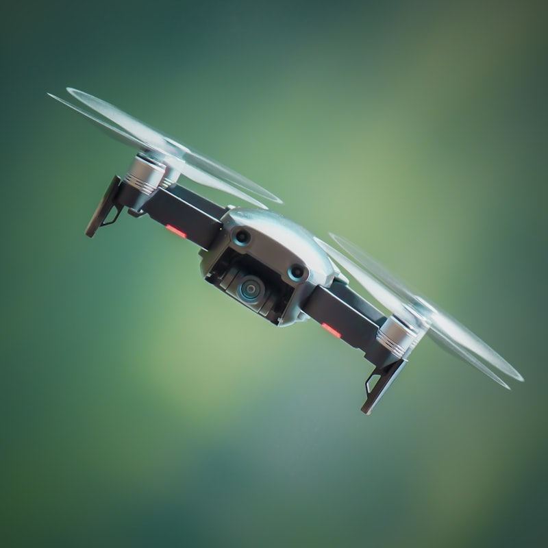
4 мотораКвадрокоптеры (Классические)
Самая распространённая конфигурация многороторных БПЛА с четырьмя несущими винтами (два вращаются по часовой, два против).
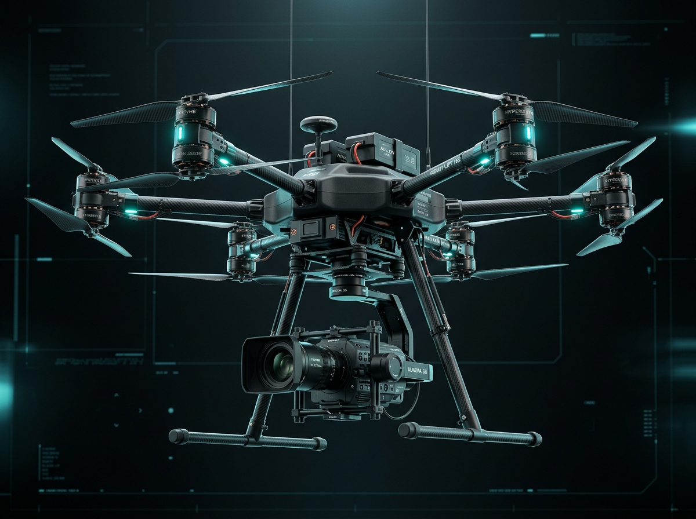
6 моторовГексакоптеры
Дроны с шестью несущими роторами, расположенными по кругу на отдельных лучах.
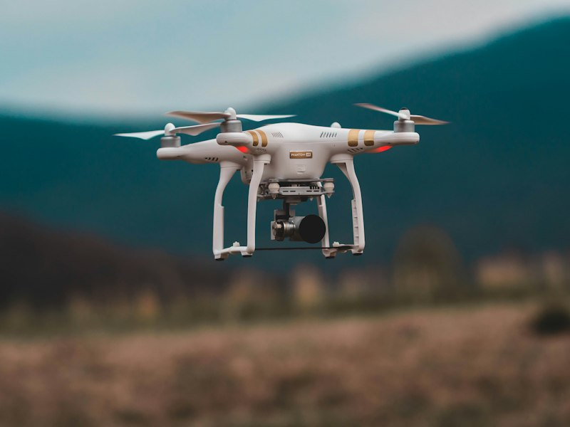
8 моторов (или 4 луча соосно X8)Октокоптеры
Тяжёлые промышленные восьмимоторные мультикоптеры (звездообразные либо соосные X8).
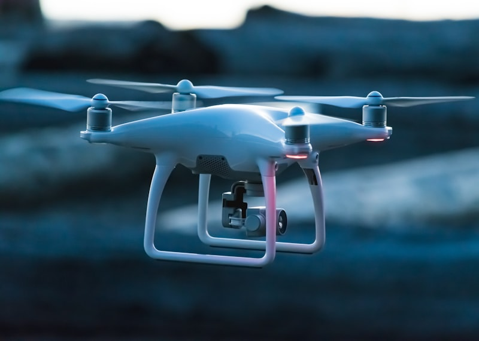
1-2 тянущих или толкающих мотораСамолётные БПЛА (Fixed-Wing)
Беспилотные самолёты с неподвижным крылом, создающим подъёмную силу за счёт набегающего потока воздуха.
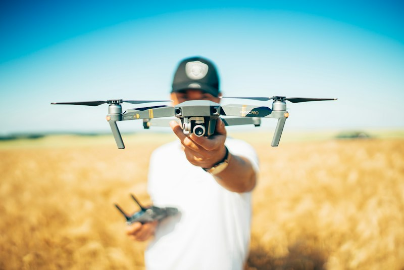
3-5 моторов (поворотные / раздельные)VTOL-дроны (Вертикальный взлёт и посадка)
Гибридные аппараты, объединяющие вертикальный взлёт/посадку мультикоптера и скоростной экономичный полёт самолёта.
Что такое FPV-дрон?
FPV (First Person View) переводится как «вид от первого лица». Пилот надевает видеоочки или шлем и видит полёт точно так же, как если бы сам сидел в кабине крошечного летательного аппарата.
Инженерные схемы радиосигналов
1. Схема передачи видеосигнала (Video Link)
Минимальная задержка (15-28 мс) на частоте 5.8 GHz для мгновенной реакции пилота
2. Схема радиоуправления аппаратом (RC Control Link)
Протоколы сверхнизкой задержки (ExpressLRS 2.4GHz / 500-1000Hz пакетов в сек)
Анатомия комплектующих FPV-дрона
Роль каждого ключевого элемента в радиоэлектронной системе БПЛА
📹 FPV-камера
Глаза пилота. Использует быстрые матрицы с широким динамическим диапазоном (WDR) и углом обзора FOV 130-160° для моментальной оценки препятствий при любом освещении.
📡 Видеопередатчик (VTX)
Генерирует и передаёт видеосигнал на частоте 5.8 GHz. Оснащён контролем мощности (SmartAudio) для переключения между 25, 100, 200 и 400+ мВт.
🥽 FPV-очки / Видеошлем
Приёмник видеосигнала со встроенными экранами, диверсити-модулем, всенаправленными и патч-антеннами для надёжной связи за препятствиями.
📻 Радиоприёмник (Receiver)
Компактная плата (ExpressLRS или TBS Crossfire), принимающая управляющие команды с частотой обновления до 500-1000 Гц и дальностью в километры.
🎮 Пульт управления (Transmitter)
Главный орган контроля пилота. Высокоточные стики на датчиках Холла, эргономичный корпус и протокол радиопередачи с низкой задержкой.
🧠 Flight Controller
Мозг дрона на базе микроконтроллера STM32 (F4/F7/H7). Оснащён гироскопом/акселерометром (IMU), барометром, OSD чипом и прошивкой Betaflight.
⚡ ESC (Регулятор скорости)
Электронные ключи (MOSFET-транзисторы), преобразующие постоянный ток аккумулятора в 3-фазный переменный ток для плавного вращения моторов по протоколу DShot.
🌀 Бесколлекторные моторы
Электродвигатели высокой мощности без щеточных узлов. Характеризуются типоразмером статора (например, 1404) и показателем KV (обороты на вольт).
🛸 Пропеллеры
Преобразуют вращающий момент в подъёмную тягу. Различаются диаметром, шагом винта и количеством лопастей (3-лопастные D63 для тихой плавной тяги).
🔋 LiPo Аккумулятор
Литий-полимерный источник питания с высокой токоотдачей (75C-120C). Напряжение определяется числом банок (3S = 11.1V, 4S = 14.8V).
Мой FPV-дрон: BetaFPV Pavo25
Реальный кастомный синевуп на базе оригинальных компонентов BetaFPV с неоновой подсветкой дактов для кинематографичных полётов.
Таблица оригинальных комплектующих (по фото)
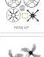
Рама: BetaFPV Pavo25 Frame Kit
Прочный аэродинамический корпус из полиамида PA12 с литыми дактами защиты пропеллеров, карбоновой пластиной 2.5 мм и толкающей геометрией (pusher). Колёсная база 108 мм.
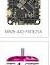
FC + ESC: BetaFPV F405 AIO 20A V4
Высокоинтегрированная плата 'всё-в-одном': полётный контроллер на STM32F405 в связке с 4-в-1 регулятором 20A (пиковый 25A) BLHeli_S/Bluejay для питания 2-4S.
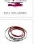
Моторы: BetaFPV 1404 4500KV (4 шт)
Фирменные моторы с двухцветным анодированием. Оптимальный крутящий момент и энергоэффективность для 2.5-дюймовых винтов в дактах на питании 3S/4S.
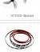
Пропеллеры: Gemfan D63 3-Blade
Специализированные малошумные 3-лопастные винты 63 мм, создающие увеличенную тягу в кольцевых воздуховодах и плавное управление на малом газу.
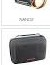
FPV-камера: Nano Camera
Ультралёгкая аналоговая камера нано-формата с минимальной задержкой, естественной цветопередачей и регулируемым углом наклона в TPU-бампере.
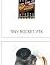
Видеопередатчик: Tiny Rocket VTX
Компактный видеопередатчик с регулируемой мощностью до 400 мВт и поддержкой SmartAudio для настройки каналов и частот прямо с пульта через экранное меню.
LED подсветка: Pavo25 Neon Strip
Гибкая яркая светодиодная лента (бирюзовая / синяя и красная), огибающая кольца дактов. Придаёт футуристичный вид и облегчает визуальную ориентацию в сумерках.
Аккумулятор: 4S 850mAh 75C LiPo
Высокотоковый литий-полимерный аккумулятор с разъёмом XT30. Обеспечивает до 6-8 минут уверенного плавного полёта с установленной экшн-камерой.
Как собирается FPV-дрон?
Пошаговый 13-этапный инженерный регламент сборки, пайки, настройки и проверки безопасности Cinewhoop-дрона.
1. Подготовка и сборка рамы
Распаковка комплекта Pavo25 Frame Kit...
Обязательно используйте антивибрационные силиконовые втулки...
Мой готовый FPV-дрон в сборе
Интерактивная 3D-модель кастомного BetaFPV Pavo25 с вращением 360°, переключением ракурсов и демонстрацией в разобранном виде (Exploded View).